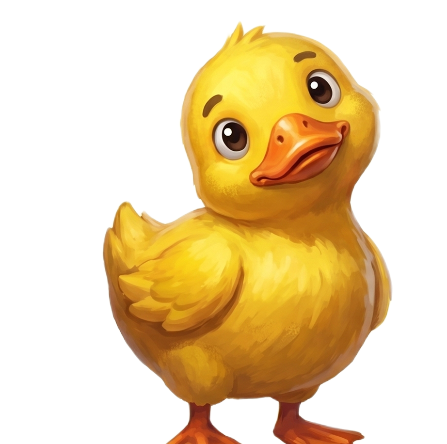
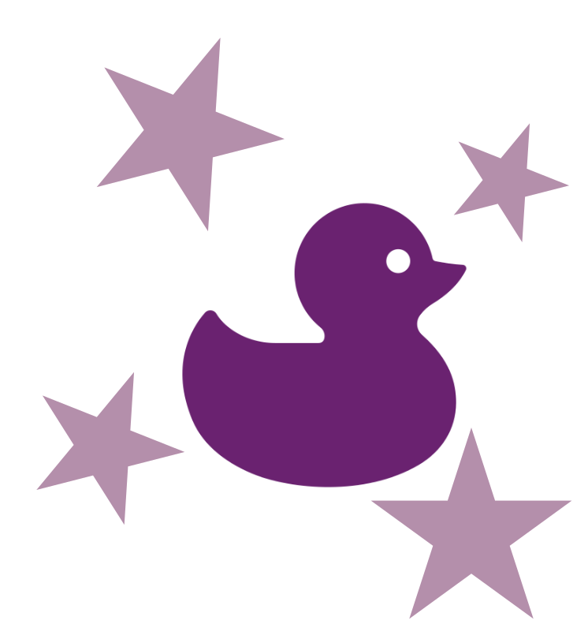
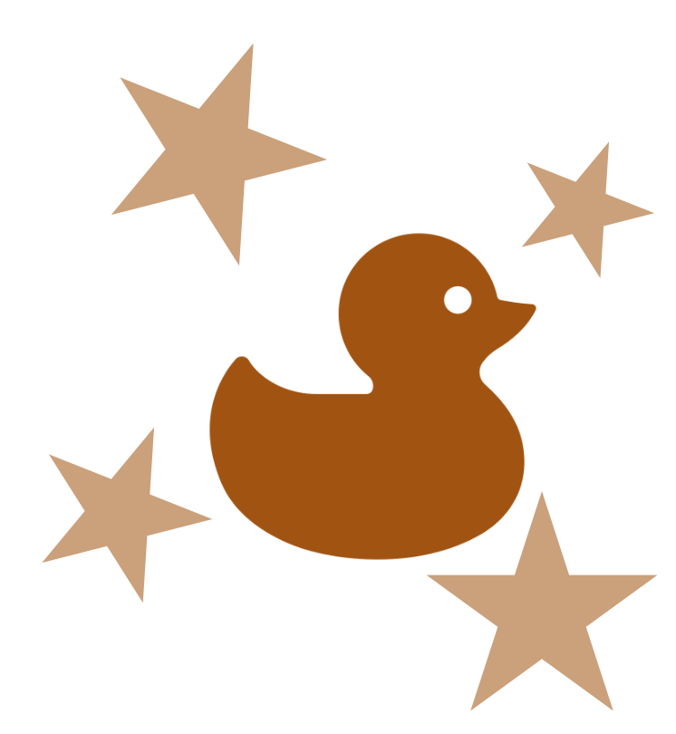
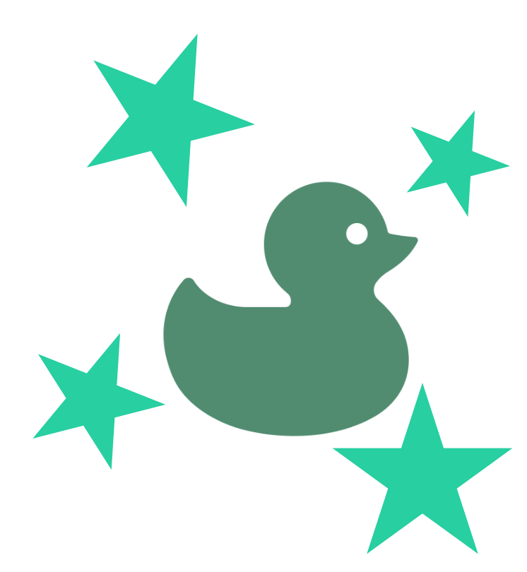
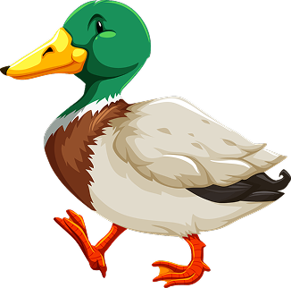
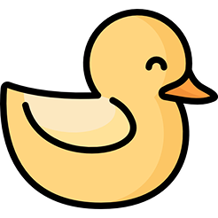
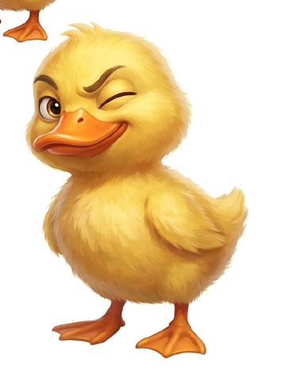
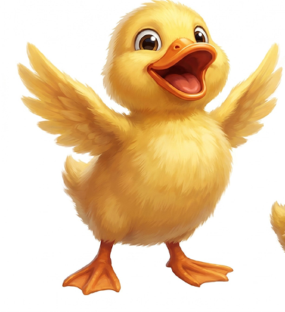
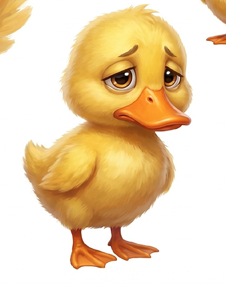

Утиные бега

«Привет! Я Плюх — маленький утёнок из Бастиона.
Правила игры

Скоро здесь появится утка
???

Скоро здесь появится утка
???
Скоро здесь появится утка
???

Скоро здесь появится утка
???

Дух авантюризма
На этой неделе нам нужно проявить внимательность и интеллект! Будут загадки, квизы и поиск настоящих сокровищ!
Сегодня мы играем в прятки! Маленькие жёлтые утята спрятались в самых неожиданных местах. Найди их и выполни задания, которые скрываются за QR-кодами.
Правила для сотрудников офисаПо офису спрятаны маленькие уточки с QR-кодами. Отсканируй код, перейди в Google-форму, ответь на вопрос и обязательно укажи свои ФИО, чтобы результаты были засчитаны.
Одна утка = 1 BST-коин.
Правила для тех, кто не в офисе- Перейди по ссылке, найди уточку и ответь на вопрос.
- Засчитываются только правильные ответы.
- Можно искать уточек как в офисе, так и в онлайн-версии игры.

На старт, внимание, Кря!
Как хочется отправиться в путешествие, далеко-далеко! Смотреть на поля, леса, реки и озера. Давай отправимся в настоящее путешествие!
- Зарегистрируйтесь в приложении Strava и вступите в клуб по ссылке. Приложение не доступно? Смотри гайд, как установить.
- Засчитываются только шаги. Велопрогулки, плавание и другие виды активности в зачёт не идут.
- Результаты необходимо отправлять в виде выгрузки из приложения.
- Отчёты можно загружать ежедневно либо 1–2 раза в неделю в зависимости от вашей активности.
- Все результаты необходимо отправить до 19 июля включительно. После этого доступ к папке будет закрыт.
Каждый участник получит 10 BST и ачивку
Участник, который пройдет больше всего шагов по итогам недели получит дополнительно 20 BST.

Мир вокруг нас
На этой недели нам нужно проявить внимательность и интеллект! Будут загадки, квизы и настоящий поиск сокровищ!
1 фото - 1 утка (даже если на фото 10 уток)
Фотографии загружай на корп. портал в раздел «Фотоконкурсы»
Подойдут любые утки:- живые
- игрушечные
- нарисованные
- слепленные
- декоративные
- Присылать скриншоты изображений уток из интернета.
- Использовать фотографии со стоковых сайтов.
- Отправлять фотографии, на которых утку невозможно рассмотреть.
- Искать «уток» в виде абстракций и метафор.
- Утка должна быть настоящей уткой — с крыльями, лапками и узнаваемым утиным видом.


Участник, который отправит больше всего фото получит 10 BST

Крясивые истории
На этой недели нам нужно проявить внимательность и интеллект! Будут загадки, квизы и настоящий поиск сокровищ!
На этой неделе будем делиться воспоминаниями, шутками и интересными историями.
Пришло время посоревноваться в чувстве юмора!
Тебя ждут три раунда на разные темы. В каждом раунде участники создают шутки, мемы или смешные истории, после чего проходит голосование в тг-канале. Победителем раунда становится автор работы, набравшей наибольшее количество голосов.
По итогам недели будет определено три победителя — по одному в каждой категории. Награда — 10 BST
А ты когда-нибудь рассказывал истории у вечернего костра?
Поделись самой интересной, смешной или запоминающейся историей из своей жизни. Возможно, именно она станет новой легендой утиных берегов. Оставляй истории в комментариях под постом на копрп. портале.
Каждый участник получит 10 BST и ачивкуАвтор, чья истори наберт больше всего сердечек — станет победителем и получит дополнительно 10 BST.
Доска почета

Паша скользкий

Кряква обыкновенная
